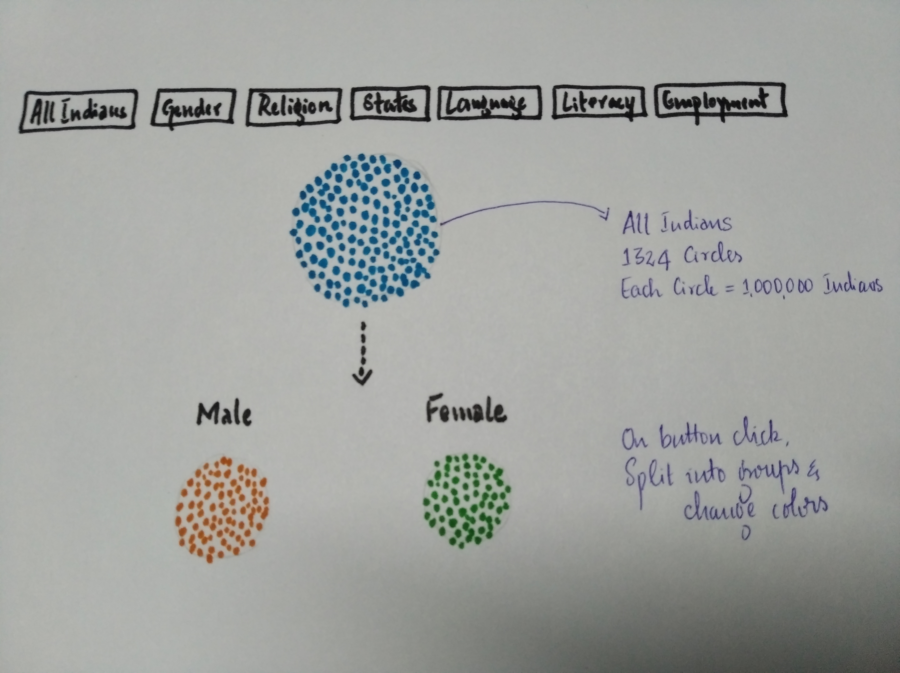

Putting Indian Demographics in perspective using bubble chart transitions in d3.js
October 2018
India is the second most populous country and the biggest democracy in the world. Despite making a lot of economic progress in the past couple of decades, the country is faced with a myriad of challenges due to its vast diverse population. But at the same time, this population is also what drives the growth of the country in key sectors over the coming decades.
The vast diversity of India makes its demographics a fascinating subject to study. But often the data presented in mere text fails to capture the significance of the underlying phenomena. This project aims at overcoming this by presenting the same data in pictorial form making it visually very appealing. The interactive nature of the visualisation further enables the user to explore different aspects of Indian demographics.
The aim of the project is to highlight some of the startling facts of India which is often best communicated through visual representation. Hopefully such projects will make the general public more aware of some of the dire challenges faced by the country.

The rural urban split of India’s population has steadily changed over the last few decades with more and more people moving into cities in search of better education and career opportunities. This has put enormous pressure on India’s megacities where the infrastructure is ill equipped to support such massive population boom and the natural resources are severely limited.
India’s rich diversity is perhaps best reflected by the graphic showing languages. With more than 20 different official languages, India is one of the unique countries on the planet also highlighting the challenges faced in administration of such a vastly diverse set of people.
In the graph showing literate/illiterate split, it can be seen that two of India’s least literate states (UP and Bihar) are also the most populous ones. Development in key areas such as education and healthcare in these states is one of the key challenges for the overall development of the country.
In the graph showing split based on employment sectors, we can see that Agriculture is still one of the most important sectors of India. Despite the boom in the manufacturing and technology sectors, true development is only possible with reforms/policies favouring farmers and others whose lives are based on agriculture.
Open defecation split illustrates one of the dire situations of India. While the numbers have improved vastly in the recent years, there is still a long way to go till eradication of this age old practice.
Perhaps the most saddening graph is the one showing the number of people living with less than 3 dollars a day. While India has made giant gains in lifting millions of people from extreme poverty over the last few decades, there are still significant challenges ahead in providing basic essentials to millions more.
Only those people with a minimum annual income of INR 2.5 lakhs (USD 3500) are required to pay tax in India. However even taking this into consideration, the number of eligible people who pay tax is abysmally low. This is highlighted in the graph showing the split of number of people who pay tax. Unless there is a significant rise in the number of people paying taxes in the coming years, the government will face the challenge of financing the much required infrastructure and other essential projects.
Showing data for more than 30 states and union territories was one of the challenges especially on mobile screens. To address this, abbreviated names were used.
Radius of circles were set relative to screen size.
Few figure titles were too long to fit into mobile screen. A custom function to wrap text within desired width was used
Learnings: Bubble chart transitions
The visualisation was inspired from Shan Carter's Four Ways to Slice Obama’s 2013 Budget Proposal in New York Times.
The code was adapted from Jim Vallandingham's Creating Bubble Charts with D3v4.